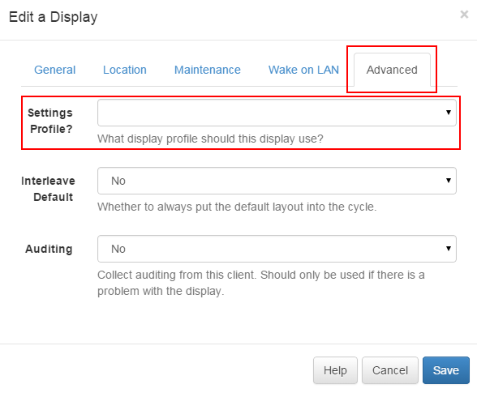

Display Setting Profiles
Display Clients are configured automatically from the CMS once they are connected. This is managed using Display Profiles.
A default display profile for each client type is provided and can be customised to the administrators preferences. It is also possible to create a new display profile and assign it directly to a display.
Viewing the available profiles
Profiles can be viewed from the "Display Settings" sub-menu on the "Display" menu. A list of profiles (shown below) will be shown when the page loads. Each profile has an action button to bring up the Edit or Delete forms.

Each profile has a name, a type and a flag indicating if it is the default or not. Default profiles are automatically assigned to displays of the corresponding type.
Editing a profile
Once the Edit action is selected for a profile the below Edit Form is displayed. This form allows all the available settings to be adjusted.

Each setting is explained on the form under each form field.
Deleting a profile
Display profiles can be deleted, but please ensure there is one default remaining.
Setting on the display
The default profile will automatically apply to all displays of the same type. If a display should be overridden with a profile then one can be selected on the Display Edit Form on the Display Management page.
